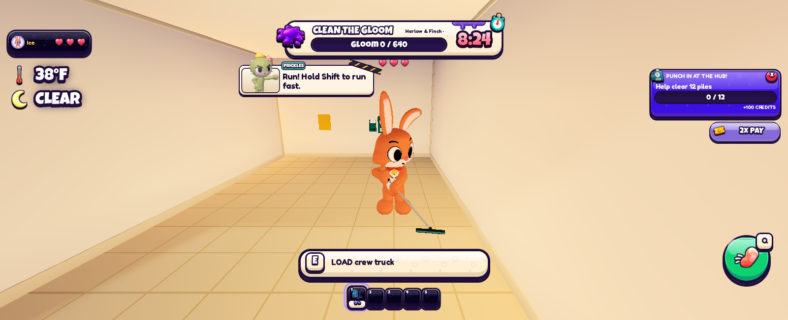
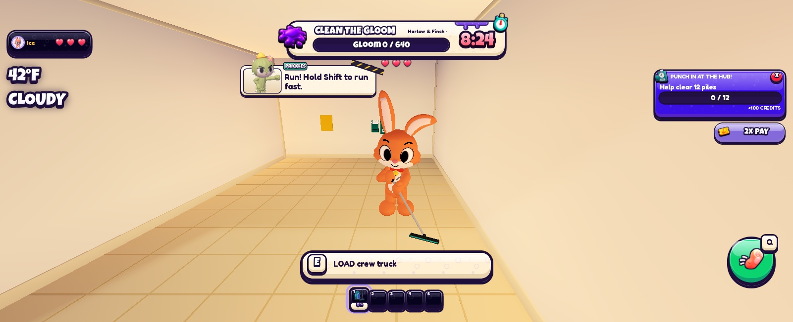
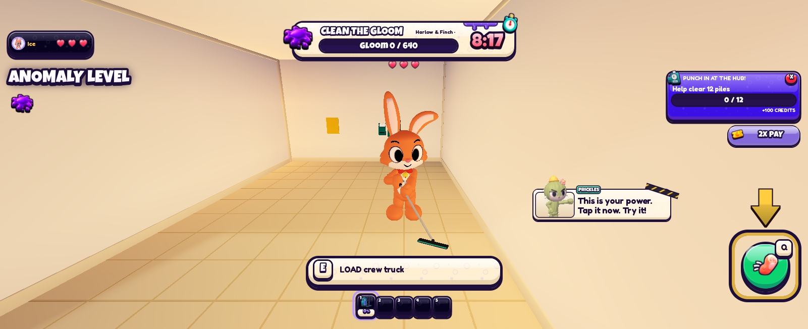
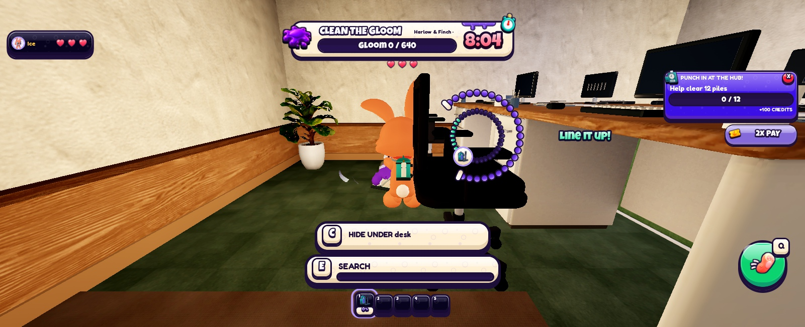
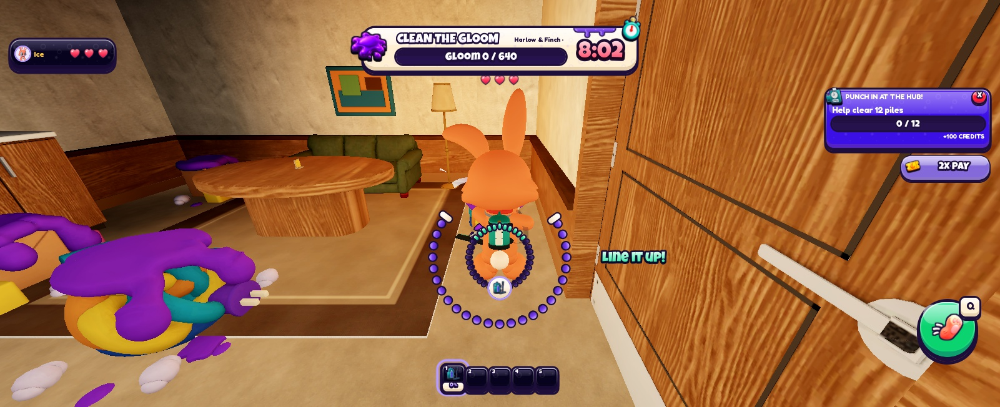
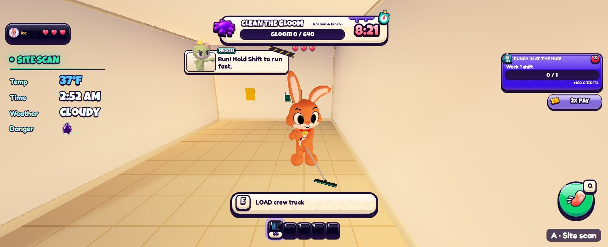
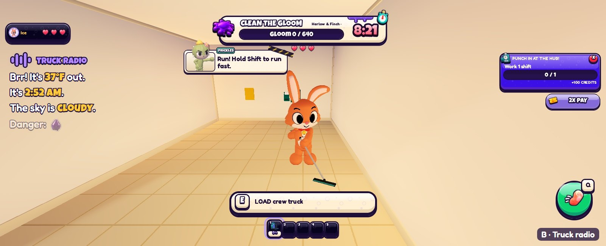
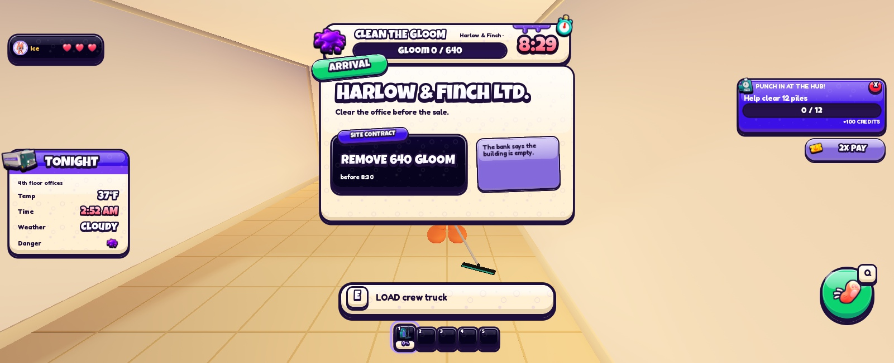

More Scary, Less Maze
You said cleaning feels too easy, the manager shows up too little, and the buildings feel like a twisty box. I measured the game. Here is what I found and what we can change. Pick Yes, No or Later on each idea. Your picks save by themselves.
New plan, after your picks (17 Nov)
You said yes to 3 ideas: the Gloom level, a second monster, and Floors mode (ideas first). Your notes also gave me 2 new ideas: slow everyone down, with a bigger sprint gap, and more skill: see him and plan your way around him. Here is the plan at our real speed. Each batch is small, so you can play-check it on its own.
What can make launch (lock: Sun 22 Nov): batches 1, 2 and 4, for sure. Batch 3 can make it, but it is the risky one. Today the game is built for exactly one monster. About 20 parts assume that: the heartbeat, chase music, catching, hiding, and the lights. So we build it with an off switch. If your Saturday check finds bugs, it stays off for launch and ships in the first update.
Floors mode, honestly: even at our speed, a good version is about 4–6 days. That means a new run flow, bigger contracts per floor, a lives screen, and new pay numbers. Rushing it into the last 5 days risks the whole launch. I'd make it the first update and pick the ideas this week, so building starts the day after launch.
Your map question (\"maze, or the opposite?\"). You're right, it's the opposite. Every room hangs one step off a loop of halls, so you are never far from a loop. Nothing is deep, and you never have to choose \"do I risk the far wing?\". Lethal Company is hallway-heavy too. What it has that we don't is deep branches: long wings where the good stuff sits at the end, and getting back out is the scary part. So keep our halls. They are our look, not Dandy's World's. After launch, add 1–2 deep wings per building (card below).
Next picks: more threat while cleaning (18 Nov)
Where your "too easy while cleaning" ask stands.
- Built (ready for your check): the ring skill check, where a miss makes a noise he can hear, and the landing readout with the anomaly level.
- Waiting on you: the second monster (which one?) and Floors mode (pick an idea below).
- Later: the slower game with real escapes, deeper buildings, and voices.
- You said no: busier manager, shorter rests, comes looking, third step, warning, wide halls, weather, and the map changes.
I owe you the Floors ideas page; it's below now. Sorry it came late.
The second monster: which one?
You picked Safety Sam and the Lookalike back on 13 Nov. First the game has to learn to run 2 monsters at once, which is about 2–3 days of work with an off switch. Then the monster itself:
Floors mode: pick an idea
Each idea makes the early floors calm and the later floors scary. Honest size for any of them: 4–6 days, so after launch. Pick the idea now and building starts the day after launch.
Quick ones: more threat while cleaning, before lock (Sun 22 Nov)
Both build on your ring idea, so skill decides the danger, not just more manager.
Your icons are in the game (18 Nov)
Your picks (T4, C2, K1, W4) are uploaded to Icey Labs and in the readout. Here they are in real play: the thermometer and the clear-night moon. Cloudy and windy show on nights with that weather. All 7590 tests pass.

New icons for the landing readout (18 Nov)
Here are 2 tries for each new icon, made on our own computer with no paid tools: a thermometer (T1, T2), a clear night (C1, C2), cloudy (K1, K2) and windy (W1, W2). Each is shown on light and dark backgrounds. There are no stars or sparkles. Nothing is uploaded yet. I upload to Icey Labs only after you pick. Honest take: the moons and clouds work. The thermometers look a bit like baby bottles, and the wind swirls a bit like vines. Pick one per icon, or say "redo" in the note.
Second try (T3–T5 thermometers with a clear glass bulb and scale marks; W3–W5 wind gust lines). The thermometers read right now, and T4 is my pick. The wind lines are better but look a bit like stacked bars. W3 is the best one, and the only one with a clear curl.
Polish, seen in real play (18 Nov)
No more gap before the temperature and weather, and the Gloom drop is bigger. The ring now finds the top of your character (ears and hats too). It goes above your head, or beside you when there's no room, like here with the camera close. All 7590 tests pass.



Built from your picks (18 Nov, real play)
Landing readout (look C): it waits until the ARRIVAL card closes. Then it shows 3 screens, one at a time, each fading in and out. Icons for the temperature and weather are still to come, so those lines have an empty space on the left for now. All 7557 tests pass.


Ring: now 2–3 quicker rings per pile. In a test, one pile gave 3 rings. On a computer, the ring sits higher, but it still covers your head and ears.

Skill check: first real play (18 Nov)
Your ring idea is in the game, with an off switch. Hold the vacuum on a pile and a purple ring with a gap closes in. Move your mouse to slide the vacuum icon around the inner circle, into the gap (the green beads), before the ring lands. A miss makes a noise the manager can hear. The gap gets smaller as the pile gets cleaner. In a test run: 4 rings, 1 hit, 3 misses, and every miss made a noise. All 7545 tests pass.



Things I noticed: the ring sits on top of your character. ("Line it up!" used to overlap the hotbar; that is fixed, see above.) Also, a pile only takes 2.5 s to clean, so you get about 1 ring per pile, not a few that keep shrinking. To get more rings per pile, the rings must be faster or piles must take longer. Tell me in the note which you'd like, and where the ring should sit.
Landing readout: pick a look (18 Nov)
You picked: wait until the ARRIVAL card closes, and no card or back frame, more like a diagnostics screen or a voice report. Here are 3 quick looks, drawn over a real game screenshot. In the game, the lines come in one at a time (typed or faded), stay a few seconds, then fade away. Grey circles mean an icon still to be made. Pick Yes on the one you want.



Your answers, round 2 (17 Nov, late)
Building now: the landing card. When you touch down, it shows Temp, Time, Weather and Danger (Office 1 drop, School 2) for a few seconds. It is always night. The temp and time are random, the weather is Clear, Cloudy or Windy, and the whole crew sees the same card. On hold: the second monster, until you pick which one. Later: the slower game.

"Are we using Kruskal's?" Close. We grow the halls like randomized Prim's: each step adds a random hall anywhere on the edge of what is built. Kruskal's looks the same. Both make lots of short, bushy branches, and that is why nothing feels deep. A DFS (the "recursive backtracker") keeps growing from the newest end. It makes long, winding paths with real dead ends, naturally and without forcing it. The catch: our grid has only 12 crossings (4 × 3), so even DFS can only make 1–2 deep branches. For real depth it also needs a bigger grid with shorter steps (for example 6 × 4). Work: about 2–3 days, then I measure 40 builds again and you do a feel check. Pick below.
Skill check ideas. I think I understand your ring idea. Here it is, plus 3 others that are not the usual timing bar. Every one gets harder as the pile gets smaller, and a miss makes a noise the monster can hear. Each also works on a phone (drag) and a controller (stick).
What the game does today
What other games do: Lethal Company sends in more monsters as the day goes on and rolls weather when you land. Dandy's World starts each run with 2 monsters and adds more each floor, up to 8, with quiet early floors. Both keep calm moments between scary ones, so the scary parts hit harder.
Small changes · can be ready before content lock (Sun 22 Nov)
Big changes · first update after launch
Loading your picks…